Delta Dunării este o destinație bogată în atracții naturale și culturale. Printre cele mai populare activități și puncte de interes se numără:
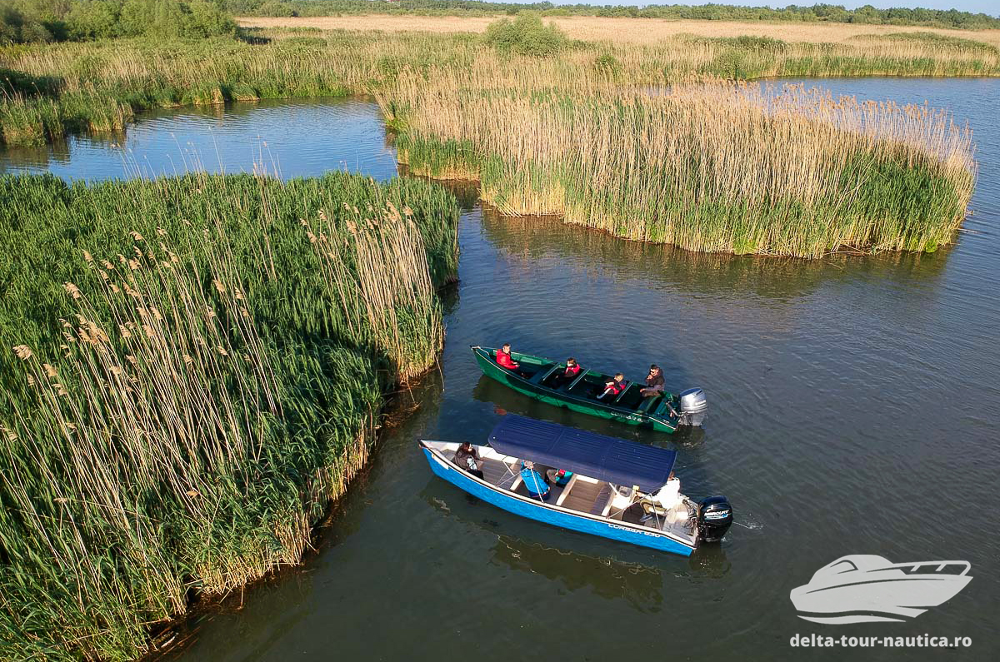
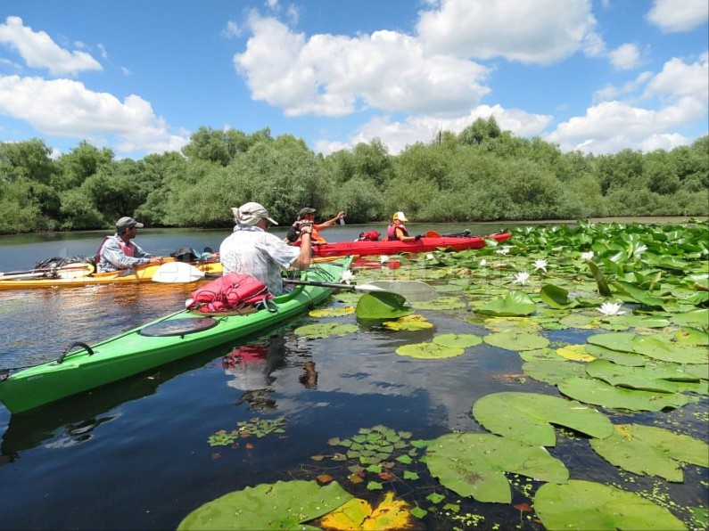
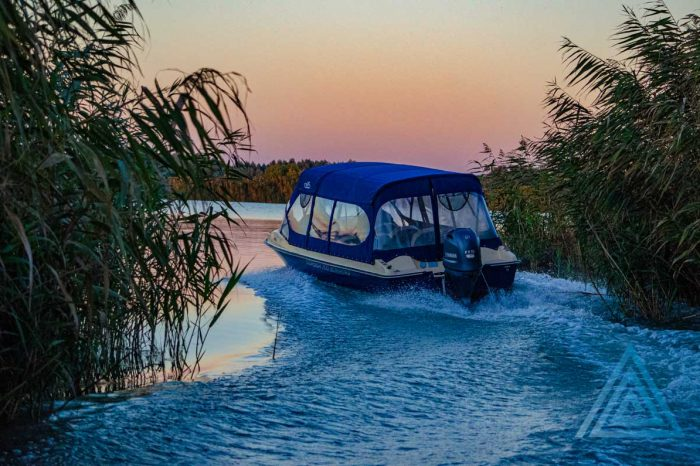
Această activitate oferă oportunitatea de a explora frumusețea naturii din Delta Dunării, navigând pe canalele sale și descoperind peisajele spectaculoase și viața sălbatică unică.
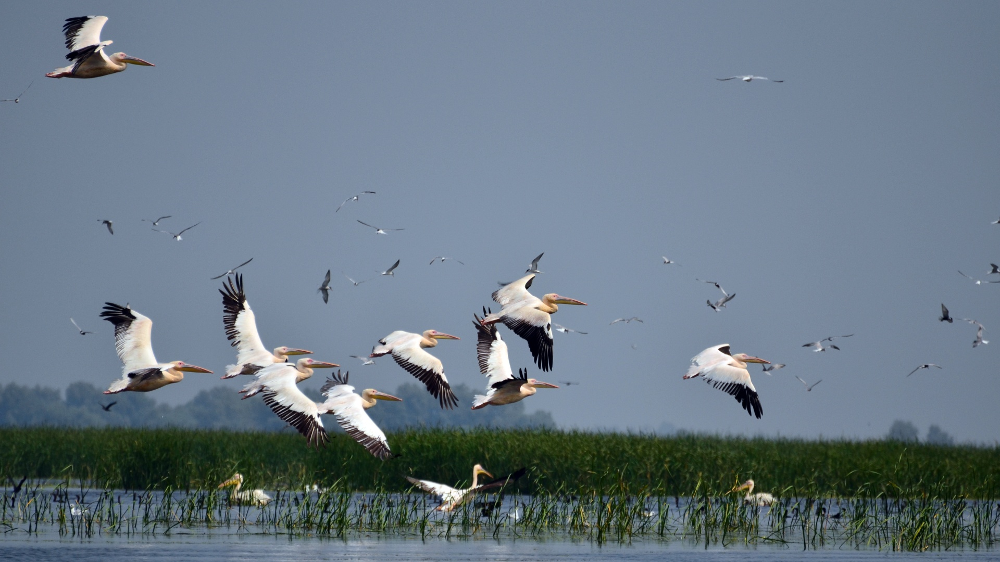
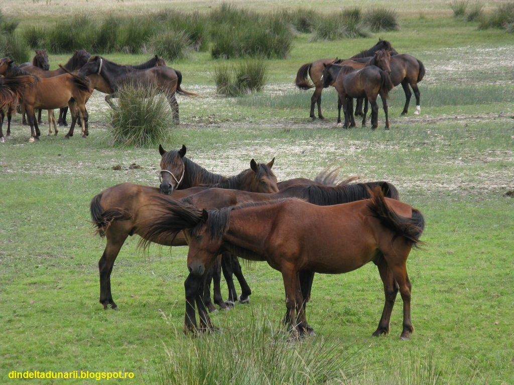
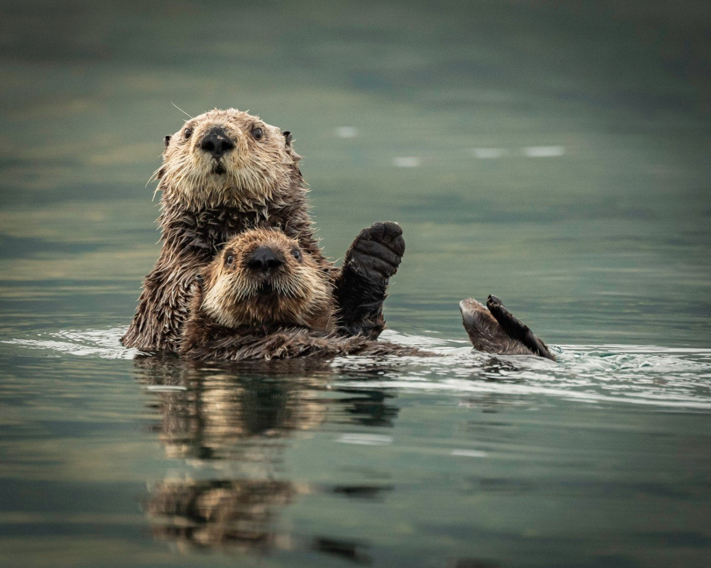
Rezervațiile naturale din Delta Dunării oferă oportunitatea de a observa o varietate impresionantă de păsări migratoare și de a înțelege importanța conservării habitatelor lor naturale.
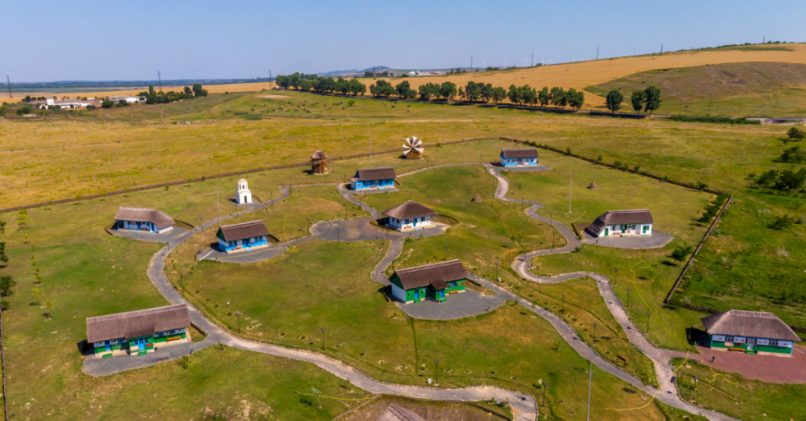
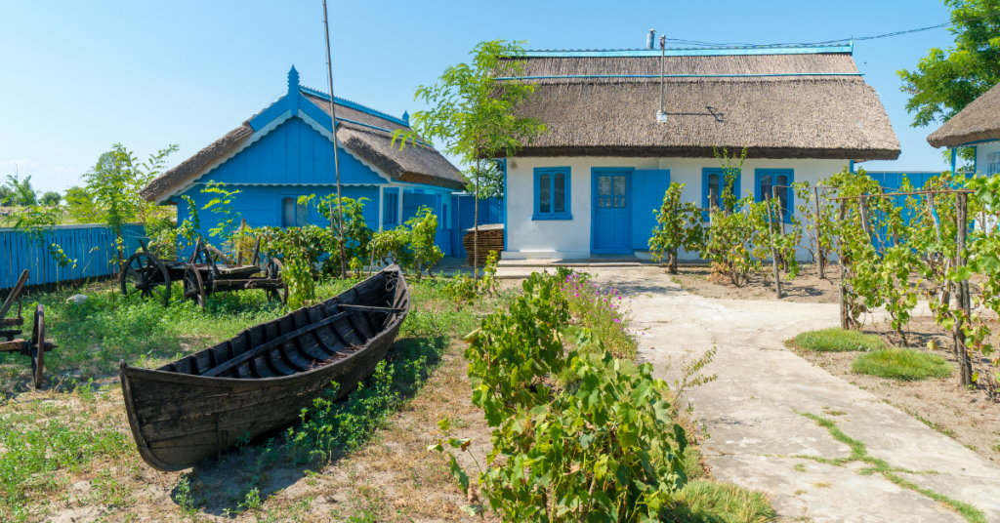
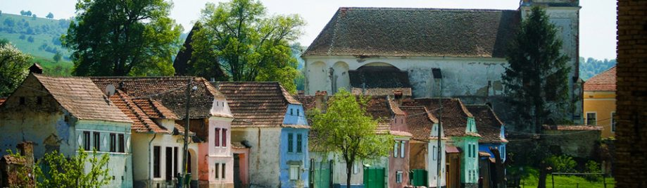
Interacțiunea cu locuitorii din satele tradiționale ale Deltei Dunării oferă o perspectivă autentică asupra vieții și culturii locale, precum și oportunități de a experimenta gastronomia și meșteșugurile tradiționale.
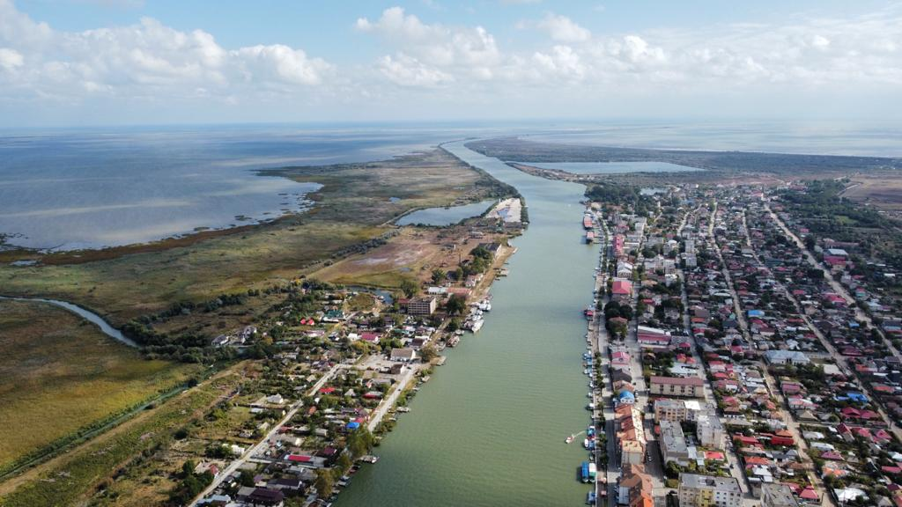
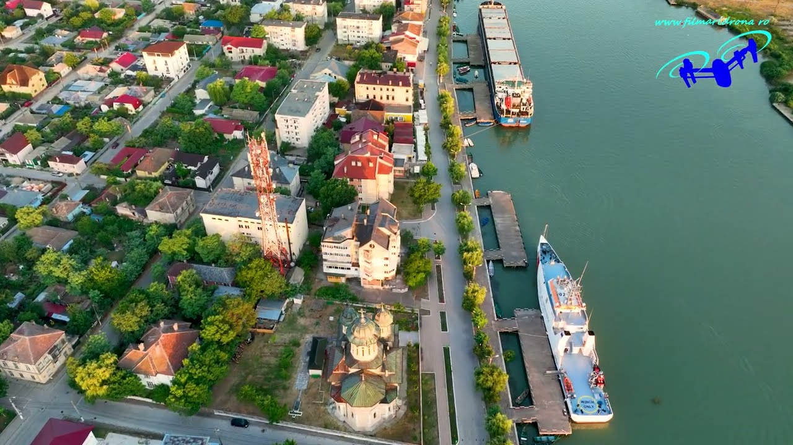
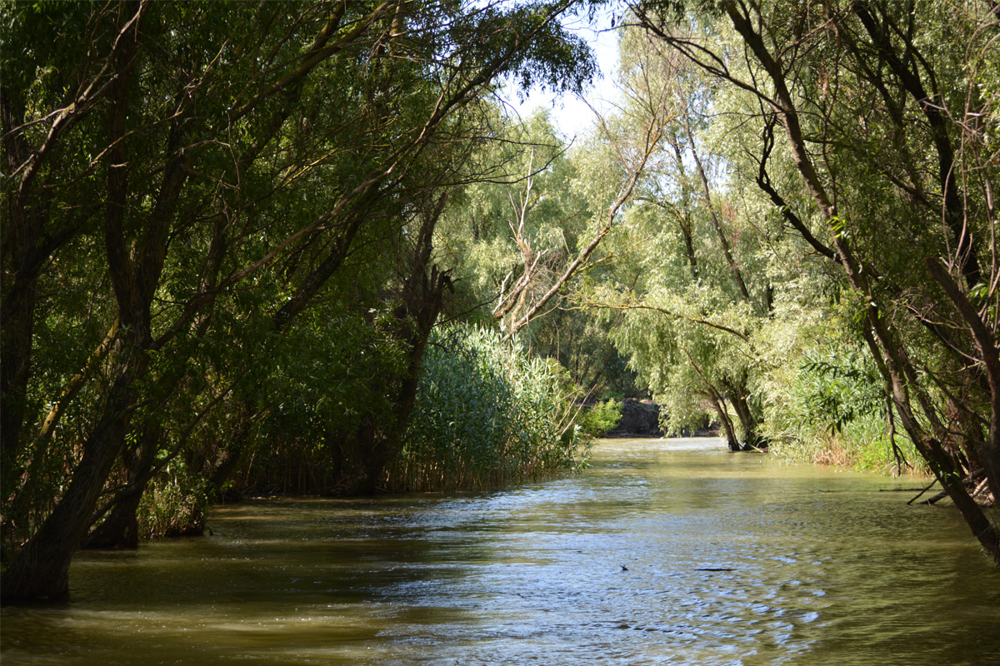
Orașul Sulina, cu istoria sa bogată și arhitectura sa distinctivă, oferă oportunități de explorare a patrimoniului cultural și istoric al Deltei Dunării, inclusiv vizite la muzee și monumente istorice.
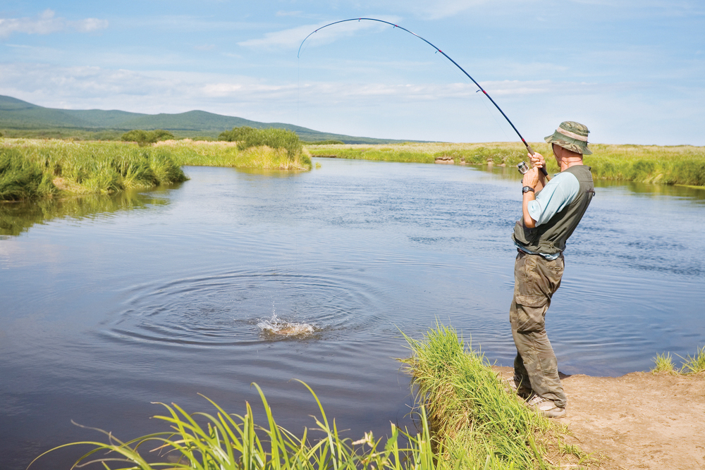
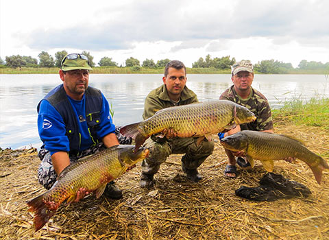
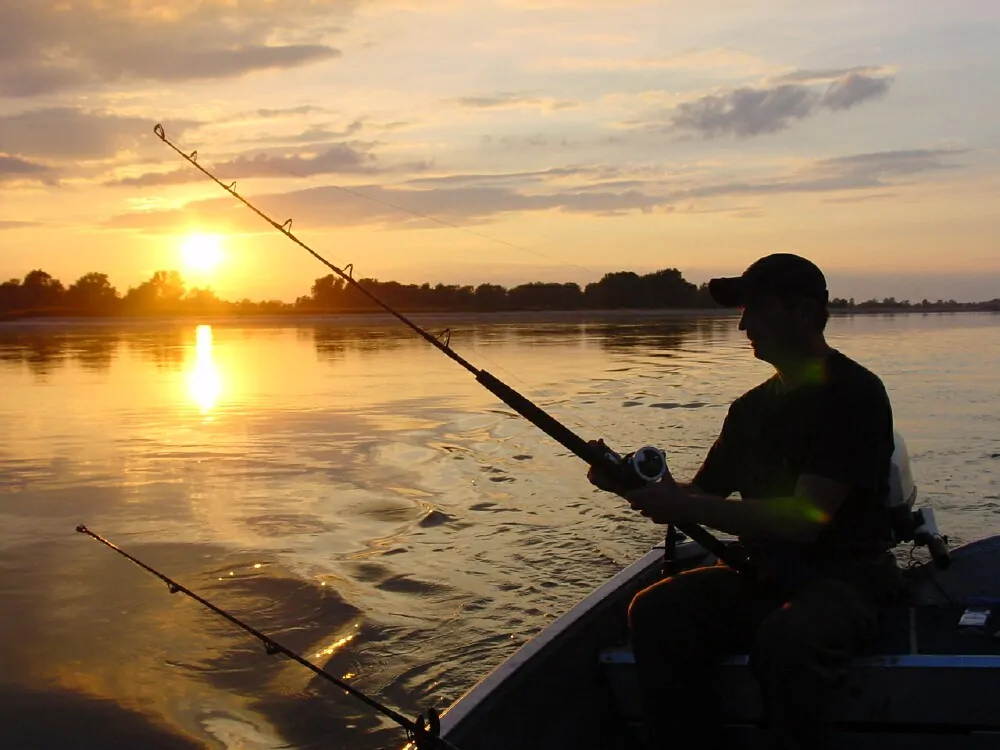
Pescuitul sportiv în Delta Dunării oferă o experiență captivantă pentru iubitorii de pescuit, cu oportunități de captură a diverselor specii de pești într-un cadru natural unic și spectaculos.
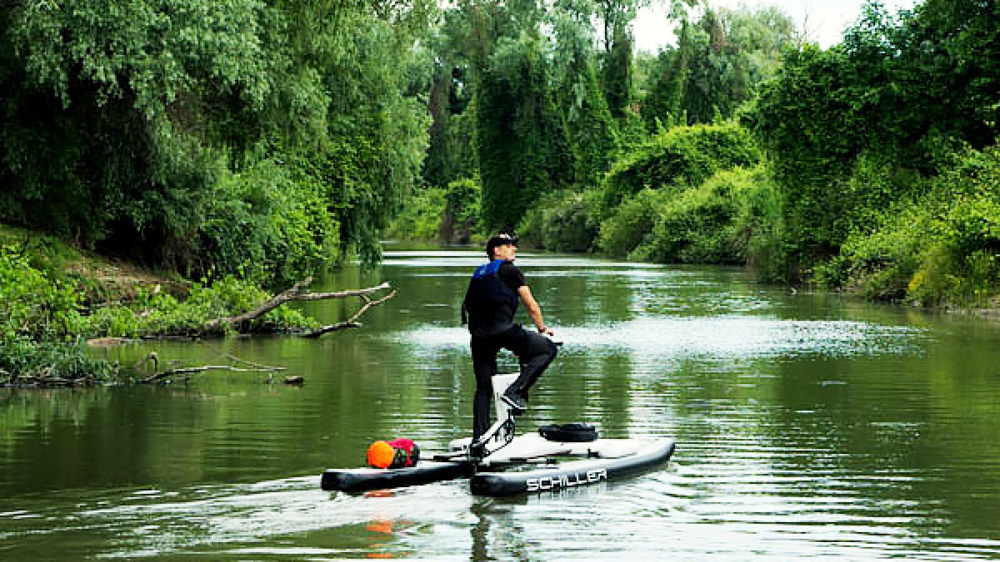
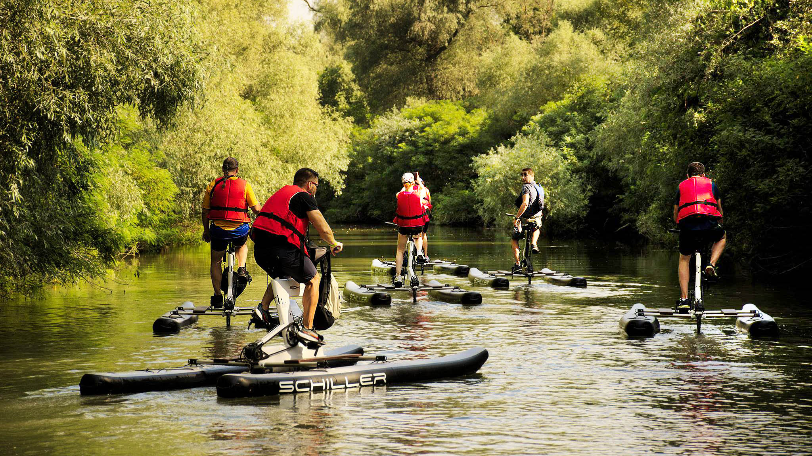
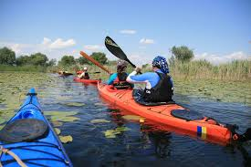
Explorarea peisajelor naturale ale Deltei Dunării pe bicicletă sau pe jos oferă oportunități de relaxare și aventură, permițându-vă să descoperiți frumusețea și diversitatea ecologică a acestei regiuni unice.